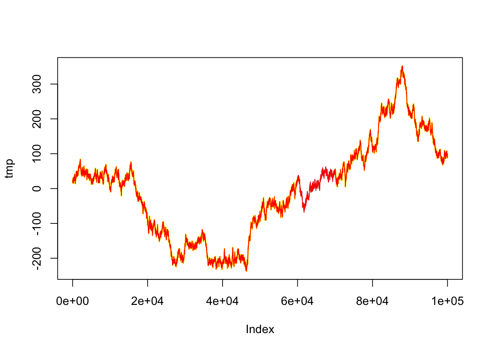

formula <-as.formula(y~x)results <- bench::press(rows = n, { dat <-data.frame(x =rnorm(rows), y =1:rows,z =rnorm(rows)) bench::mark(frec = Recipe$new(formula = formula, data = dat)$add_step(StepHarmonic$new(x, frequency =c(1, 2, 3), cycle_size =0.1, starting_value =0))$plate("tbl"),rec = recipes::recipe(formula = formula, data = dat) |> recipes::step_harmonic(x, frequency =c(1, 2, 3), cycle_size =0.1, starting_val =0,keep_original_cols =TRUE) |> recipes::prep() |> recipes::bake(new_data =NULL),# sin and cos terms order is differentcheck =FALSE,relative = relative,min_iterations =10 ) })results
set.seed(123)n <-100000frm <-formula(x ~ y + z)x <-cumsum(rnorm(n))dat <-data.table(x = x, y = x, z =as.numeric(1:n))dat[, x := x +c(rep(20, n/2), rep(0, n/2))]dat[, x := x +3.0*sin(z *1/n)]tmp <-copy(dat$x)plot(tmp, type ='l')dat[60000:70000, x :=NA_real_]dat <-unclass(dat)f = Recipe$new(formula = frm, data = (dat))$add_step(StepFindInterval$new(z, vec =c(0, n/2, n)))$add_step(StepIntercept$new())$add_step(StepSplineB$new(z, df =4))$add_step(StepDropColumns$new(z))results <- bench::mark(frec = Recipe$new(formula = frm, data = dat)$add_step(StepOlsGapFill$new(c(x, y, z), recipe = f)))results
# A tibble: 1 × 6
expression min median `itr/sec` mem_alloc `gc/sec`
<bch:expr> <bch:tm> <bch:tm> <dbl> <bch:byt> <dbl>
1 frec 163µs 176µs 5090. 587KB 15.9
frec = Recipe$new(formula = frm, data = dat)$add_step(StepOlsGapFill$new(c(x, y, z), recipe = f))tmp2 <- frec$plate()points(dat$x, type ='p', pch =20, cex =0.2, col ="yellow")points(tmp2$ols_gap_fill, type ='l', col ='red')

check
step_check_spacing
formula <-as.formula(y~x)results <- bench::press(rows = n, { dat <-data.frame(x =rnorm(rows),y =1:rows) dat[9, "x"] <-NA dat[9, "y"] <-NA bench::mark(frec1 = Recipe$new(formula = formula, data = dat)$add_step(StepCheckSpacing$new(y))$add_step(StepCheckNA$new(y))$prep()$bake(),frec2 = Recipe$new(formula = formula, data = dat)$add_step(StepCheckSpacing$new(x))$add_step(StepCheckNA$new(x))$prep()$bake(),check =FALSE,relative = relative,min_iterations =10 ) })results